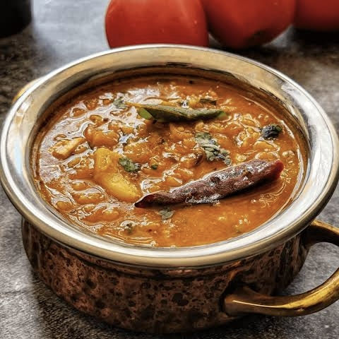

Ingredients:
For Cooking Dal:
- 1 cup toor dal (pigeon pea lentils)
- 2 Tomatoes ,choped
- 1 green chili, slit
- ½ tsp turmeric powder
- 2 cups water
- Salt to taste
For Tempering (Tadka):
- 2 tsp oil or ghee
- ½ tsp mustard seeds
- ½ tsp cumin seeds
- 1 small onion,finally chopped
- 3-4 garlic cloves,minced
- 2 dried red chilies
- 1 sprig curry leaves
- 3-4 garlic cloves, minced
- ½ tsp red chili powder
- ½ tsp hing (asafoetida)
- 1 tbsp tamarind pulp(optional,foe extra thickness)
- fresh coriander leves for garnish

Instructions:
-
Cook the Dal:
- Wash toor dal thoroughly and soak for 15-20 minutes (optional, helps in faster cooking).
- Add dal, chopped tomatoes, green chili, turmeric, and water to a pressure cooker.
- Pressure cook for 3-4 whistles on medium flame until dal is soft and mushy.
- Once pressure releases, mash the dal and mix well. Add salt.
-
Prepare the Tempering:
- Heat oil or ghee in a pan.
- Add mustard seeds and cumin seeds. Let them splutter.
- Add dried red chilies, curry leaves, chopped onions, and garlic. Sauté until onions turn golden
- Add red chili powder, hing, and tamarind pulp. Mix well.
-
Combine:
- Pour the tempering over the cooked dal and mix well
- Simmer for 2-3 minutes, adjusting consistency with water if needed.
-
Garnish & Serve:
- Garnish with chopped coriander leaves
- Serve hot with steamed rice, ghee, and a side of pickle or papad.
కావలసినవిః
పప్పు వండడానికి:
- 1 కప్పు పప్పు (పావురం బఠానీ కాయధాన్యాలు)
- 2 మీడియం టమోటాలు,
- తరిగిన 1 పచ్చిమిర్చి, చీలిక
- ½ స్పూన్ పసుపు పొడి
- 2 కప్పుల నీరు
- రుచికి ఉప్పు
తాలింపు కోసం
- 2 స్పూన్ నూనె లేదా నెయ్యి
- ½ స్పూన్ ఆవాలు
- ½ స్పూన్ జీలకర్ర గింజలు
- 2 ఎండిన ఎర్ర మిరపకాయలు
- 1 రెమ్మ కరివేపాకు
- 1 చిన్న ఉల్లిపాయ, సన్నగా తరిగిన
- 3-4 వెల్లుల్లి రెబ్బలు
- ½ స్పూన్ ఎర్ర మిరప పొడి
- ½ స్పూన్ హింగ్
- 1 టేబుల్ స్పూన్ చింతపండు గుజ్జు
- తాజా కొత్తిమీర ఆకులు
పప్పు ఉడికించాలి:
- పప్పును బాగా కడగాలి మరియు 15-20 నిమిషాలు నానబెట్టండి (ఐచ్ఛికం, వేగంగా వంట చేయడంలో సహాయపడుతుంది)
- ప్రెషర్ కుక్కర్లో పప్పు, తరిగిన టమోటాలు, పచ్చిమిర్చి, పసుపు మరియు నీరు జోడించండి.
- పప్పు మెత్తగా మరియు మెత్తగా అయ్యే వరకు మీడియం మంట మీద 3-4 విజిల్స్ వచ్చే వరకు ప్రెషర్ ఉడికించాలి.
- ఒత్తిడి తగ్గిన తర్వాత, పప్పును మెత్తగా చేసి బాగా కలపాలి. ఉప్పు కలపండి.
తాలింపు సిద్ధం చేయండి:
- బాణలిలో నూనె లేదా నెయ్యి వేసి వేడి చేయండి.
- ఆవాలు మరియు జీలకర్ర వేయాలి. వాటిని చిందులు వేయనివ్వండి.
- ఎండు మిరపకాయలు, కరివేపాకు, తరిగిన ఉల్లిపాయలు మరియు వెల్లుల్లి జోడించండి.
- ఉల్లిపాయలు బంగారు రంగులోకి వచ్చే వరకు వేయించాలి.
- ఎర్ర మిరప పొడి, హింగ్ మరియు చింతపండు గుజ్జు జోడించండి. బాగా కలపాలి.
కలపండి:
- ఉడికిన పప్పు మీద తాలింపు పోసి బాగా కలపాలి
- 2-3 నిమిషాలు ఆవేశమును అణిచిపెట్టుకోండి,
- అవసరమైతే నీటితో స్థిరత్వాన్ని సర్దుబాటు చేయండి.
గార్నిష్ & సర్వ్:
- తరిగిన కొత్తిమీర ఆకులతో అలంకరించండి.
- ఉడికించిన అన్నం, నెయ్యి మరియు ఒక వైపు ఊరగాయ లేదా పాపడ్తో వేడిగా వడ్డించండి.